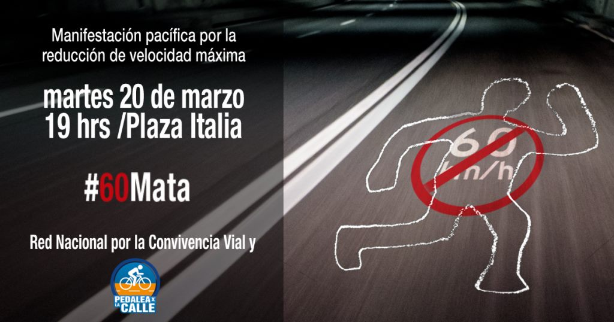
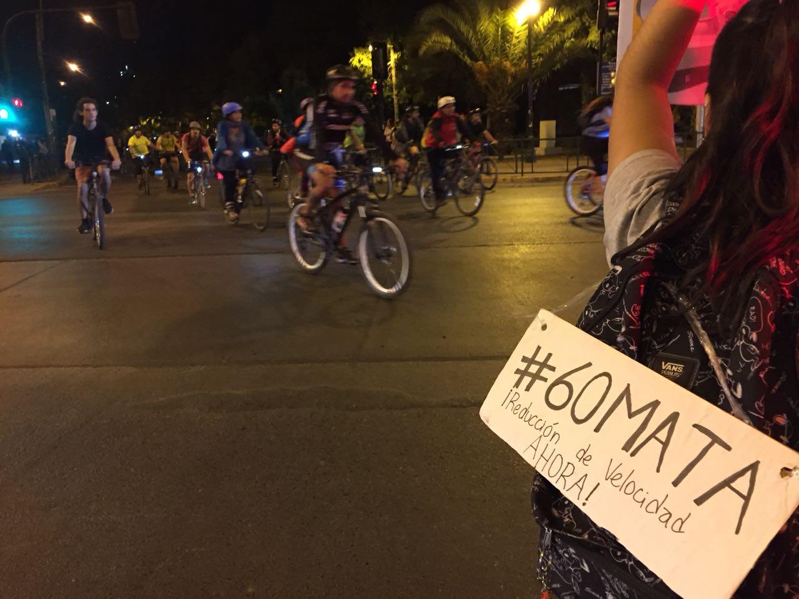
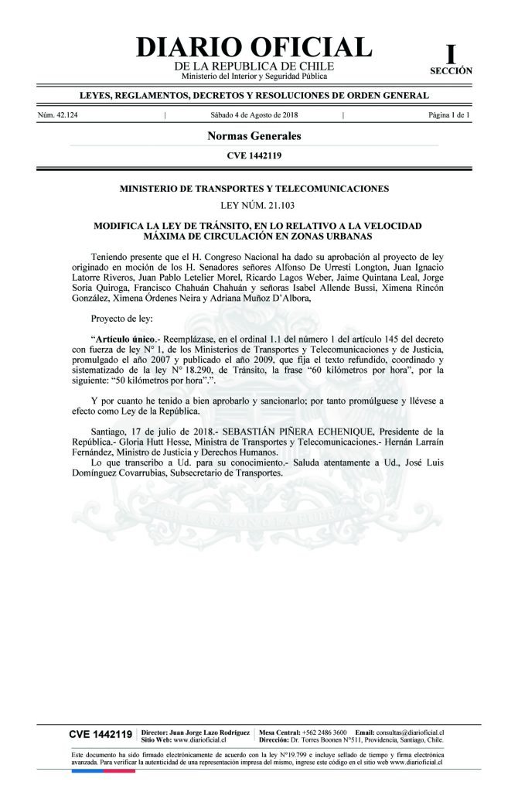

Bajar la velocidad máxima urbana de 60 a 50 km/h fue la campaña más larga y decisiva en la que participamos. No fue un trámite: tomó casi cinco años, dos rechazos parlamentarios, marchas y cicletadas, y un debate público sobre a quién le pertenece la calle. Esta es esa historia, contada por etapas.
El proyecto ciudadano
En octubre de 2014, el Ministerio de Transportes y Telecomunicaciones (MTT) abrió una consulta ciudadana para modificar la antigua Ley de Tránsito N° 18.290. La propuesta inicial del Ministerio nos pareció pobre, así que las organizaciones agrupadas en el Colectivo MuéveteStgo presentamos las nuestras.
Pusimos el énfasis en dos ideas: reducir la velocidad máxima en zonas urbanas y reconocer con claridad a la bicicleta como un vehículo, con derecho a circular por la calzada. Más que ajustar artículos sueltos, buscábamos instalar un nuevo paradigma de movilidad, que pusiera en el centro a quienes se mueven a pie y en bicicleta. De ese proceso nació el proyecto que terminaría conociéndose como “Ley de Convivencia Vial”.
Publicaciones del archivo
- Abril 2015Propuestas de modificación a la Ley de Tránsito
- Marzo 2015Accidentes en bicicleta a la baja
El rechazo del Senado
Tras más de dos años de tramitación junto a las autoridades, en noviembre de 2017 quedaba un solo artículo por aprobar: el que bajaba la velocidad máxima urbana de 60 a 50 km/h. Era el corazón del proyecto.
El Senado lo rechazó. Por 11 votos contra 8 se aprobó eliminar esa modificación. Se opusieron cuatro senadores de la UDI, cuatro de RN, dos independientes y uno del PPD: Allamand, Bianchi, Coloma, García, García Huidobro, Horvath, Ossandón, Víctor Pérez, Prokurica, Tuma y Von Baer. Ese día había apenas 19 senadores en la sala.
El rechazo tenía un efecto en cadena: sin la reducción de velocidad tampoco podía avanzar, por ejemplo, la ley de fotorradares. Esa misma mañana participamos en un punto de prensa junto a la Ministra de Transportes, Paola Tapia, y la Secretaria Ejecutiva de CONASET, Gabriela Rosende, para generar presión y reponer el artículo en la comisión mixta del Congreso. La respuesta también fue callejera: convocamos a una ciclomarcha “por una ciudad a velocidad humana”, que partió desde Plaza Italia.
Publicaciones del archivo
- Noviembre 2017Senado rechaza la disminución de velocidad
- Noviembre 2017Reportaje T13: nuevos límites de velocidad
- Noviembre 2017Ciclomarcha por una ciudad a velocidad humana
#60MATA: la campaña por la vida
El nuevo intento llegó rápido. En enero de 2018, la comisión mixta del Congreso aprobó la disminución de velocidad, con votos de diputadas, diputados y senadores de distintas bancadas. Lo celebramos como “un gran paso para conseguir ciudades más justas”. Pero en marzo el parlamento volvió a rechazarla. Ahí nació #60MATA.

Más de 100 organizaciones agrupadas en la Red Nacional por la Convivencia Vial convocamos a una marcha pacífica para el martes 20 de marzo, a las 19 horas, en Plaza Italia. Incluso ingresamos una petición al Presidente de la República para que no promulgara la ley y la devolviera al Parlamento, reponiendo el artículo rechazado.
El argumento era simple y contundente: la velocidad mata. A 60 km/h, el riesgo de morir en un atropello es de casi 100%; a 50 km/h, baja a cerca del 50%.
Y no era un problema de flujo: en Santiago, Viña o Concepción la velocidad promedio de los autos rara vez supera los 22 km/h. La discusión no era cuánto se avanza, sino cuánto daño causa un impacto. En abril, una masiva cicletada volvió a llenar las calles… y en el propio gobierno algo empezó a moverse.

Publicaciones del archivo
- Enero 2018Comisión Mixta aprueba la disminución de velocidad
- Marzo 2018Parlamento rechaza la disminución de velocidad
- Marzo 2018#60MATA: manifestación por la reducción de velocidad
- Abril 2018Gobierno apoyará la reducción de velocidad
- Abril 2018Masiva cicletada por la reducción de velocidad
La victoria: 50 km/h
El giro decisivo vino del propio gobierno. Tras la manifestación de #60MATA y la cicletada, la nueva ministra de Transportes del gobierno de Sebastián Piñera, Gloria Hutt, se reunió en abril con las organizaciones ciudadanas. Escuchó el problema, entendió su urgencia y se comprometió en público:
“El Gobierno está de acuerdo y promoverá la reducción de la velocidad máxima de desplazamiento en las zonas urbanas.”
Ese respaldo fue clave: la ministra alineó a los parlamentarios oficialistas —los mismos sectores que habían votado en contra— y destrabó la tramitación. En esa misma reunión le planteamos, además, la urgencia de revivir el proyecto de fotorradares (CATI), dormido en el Congreso desde el primer gobierno de Piñera.
En julio de 2018, el parlamento aprobó finalmente la disminución de la velocidad máxima urbana a 50 km/h. Lo entendimos como un nuevo hito en las demandas históricas de las agrupaciones ciclistas.
Durante 2017 hubo en Chile 94.879 siniestros de tránsito, con 1.483 personas fallecidas y 62.171 lesionadas. La velocidad imprudente fue la primera causa de muerte: 419 víctimas fatales, el 28% del total. (Fuente: CONASET)
El 4 de agosto de 2018, la modificación se publicó en el Diario Oficial y comenzó a regir: la velocidad máxima urbana volvía a ser de 50 km/h. Con eso, Chile deshacía por fin el aumento de 2002 y recuperaba el límite que nunca debió abandonar.

En octubre, antes de que entrara en vigencia el resto de la ley, organizamos junto a la Asociación Vive la Bici y la Universidad de Chile el Foro Convivencia Vial, para analizar en detalle las modificaciones con autoridades, Carabineros, CONASET y especialistas. En noviembre de 2018 entró en vigencia el resto de la “Ley de Convivencia Vial”, que aclaró y ordenó los derechos y deberes de todas las personas que comparten la calle: peatones, ciclistas, motociclistas y automovilistas.
Publicaciones del archivo
- Julio 2018Parlamento aprueba la disminución de velocidad máxima
- Agosto 2018Es oficial: en Chile la velocidad máxima urbana es de 50 km/h
- Octubre 2018Así fue el Foro Convivencia Vial
- Noviembre 2018Revisa el detalle de la Ley de Convivencia Vial
Implementación y vigilancia
Ganar la ley no fue el final. A dos meses de su entrada en vigencia, la implementación mostraba problemas: falta de preparación, ausencia de una estrategia comunicacional oficial y poca coordinación entre el Ministerio de Transportes y Carabineros. Eso generó confusión, controversia y temor frente a la fiscalización.
En enero de 2019, la Red Nacional de Convivencia Vial emitió una declaración conjunta llamando a Carabineros, a los medios y al MTT a corregir el rumbo, pidiendo que la fiscalización estuviera en sintonía con el espíritu de la ley: proteger a quienes son más vulnerables en la calle.
Ese año, la conversación volvió a los fotorradares. El Estado impulsaba el proyecto CATI (Centro Automatizado de Tratamiento de Infracciones), el sistema que retomaría —tras casi dos décadas— la fiscalización automática de la velocidad que la reforma de 2002 había limitado. Para nosotros era la otra mitad de la pelea: sin fiscalización, el nuevo límite quedaba en el papel. En Revista Pedalea lo planteamos así:
“La reducción de velocidad es un pilar de la Ley de Convivencia Vial, pero si no hay fiscalización no sirve de nada. Si los autos dejan de pasar tan rápido, la calle volvería a ser segura para todos.”
Ese seguimiento —celebrar los avances, pero también exigir que se cumplieran— fue parte de nuestro trabajo hasta que, con el estallido social de octubre de 2019, la actividad del colectivo entró en una pausa prolongada.
Publicaciones del archivo
- Enero 2019Declaración a dos meses de la Ley de Convivencia Vial
- Agosto 2019Revista Pedalea: Proyecto CATI, a las puertas de un cambio cultural
Compilado elaborado por Pedalea X la Calle a partir de sus publicaciones entre 2015 y 2019. Las cifras corresponden a CONASET y al proceso legislativo de la época.